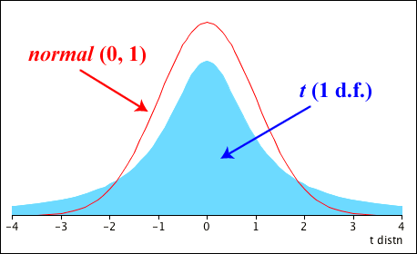
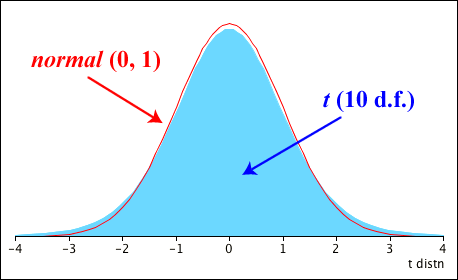
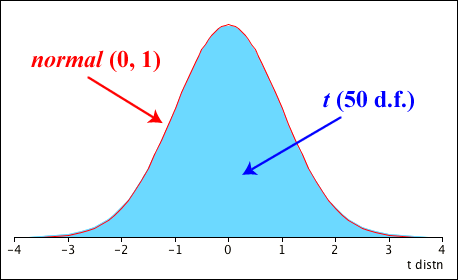

The t distribution's mean and variance are stated (without proof) below.
Mean and variance
If \(T \sim \TDistn(k \text{ df})\), then
\[ E[T] \;=\; \begin{cases} 0 & \quad\text{if } k > 1 \\[0.2em] \text{undefined} & \quad\text{otherwise} \end{cases} \]and
\[ \Var(T) \;=\; \begin{cases} \dfrac {k}{k-2} & \quad\text{if } k > 2 \\[0.5em] \infty & \quad\text{otherwise} \end{cases} \]Shape of the distribution
Since \(f(x)\) is a function of \(x^2\) for a t distribution, it symmetric around zero. It was defined as
\[ T \;\;=\;\; \frac{Z}{\sqrt{\diagfrac{Y}{k}}} \;\;=\;\; Z \times \frac{1}{\sqrt{\diagfrac{Y}{k}}} \]where \(Z \sim \NormalDistn(0,1)\) and the second term is independent of it. The t distribution is therefore more variable than the \(\NormalDistn(0,1)\) distribution.
However \(Y\) has a \(\ChiSqrDistn(k \text{ df})\) distribution with \(E[Y] = k\) and \(\Var(Y) = 2k\), so
\[ E\left[\diagfrac Y k\right] = 1 \spaced{and} \Var\left(\diagfrac Y k\right) = \diagfrac 2 k \]Therefore as \(k \to \infty\), \(\Var\left(\diagfrac Y k\right) \to 0\) and \(\displaystyle \frac{1}{\sqrt{\diagfrac{Y}{k}}} \to 1\).
As \(k \to \infty\), the t distribution therefore approaches the shape of a standard normal distribution.
When its degrees of freedom are small, the t distribution's tails are much longer than those of a normal distribution.

When its degrees of freedom get larger, the distribution's shape approaches a normal distribution, but its tail probabilities are still noticably different until the degrees of freedom reach about 30.

By the time the degrees of freedom reach 50, the t distribution can be closely approximated by a standard normal distribution.
